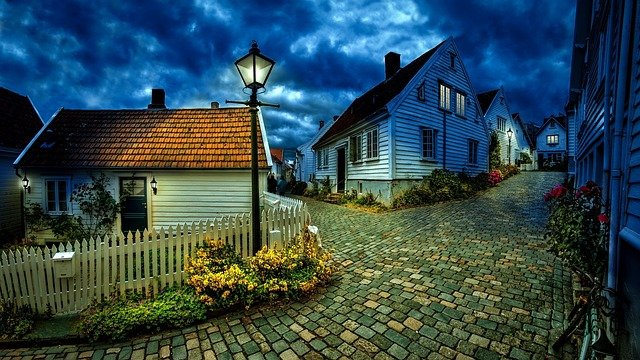

O que eu mais gosto em são paulo
Passer na avenida Paulista

Um dos principais centros financeiros da cidade, a avenida paulista também possui diversas opções de entretenimento, Endereço do museu de arte de são paulo MASP,do teatro gazeta e muitos outros a região é de fácil acesso graças as diversas linhas de ônibus que cruzam a avenida e a linha de metrô que passa por baixo dela.
A avenida Paulista sempre é assunto. o que será que estão falando a respeito no Twitter
Os bares da Vila Madalena
Depois de um dia de trabalho, nada melhor do que um bom chopp, um petisco e uma conversa em uma mesa de bar. Opções de sobra na região das ruas aspicuelta, fradique coutinho e wisard.
Veja quais os melhores bares e restaurantes da região no Guia veja são paulo
O parque do ibirapuera
Um dos cartões postais da cidade, o parque dispõe de mais de 1,5 km de area verde, lagos artificiais e pistas de cooper e ciclismo e se isso não fosse o suficiente, o parque costuma ser palco de diversos eventos culturais ao longo do ano
Veja no mapa de como chegar no parque